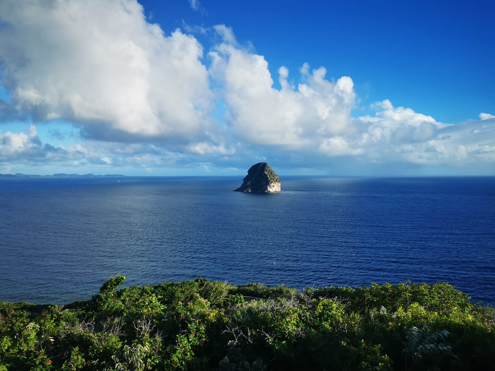
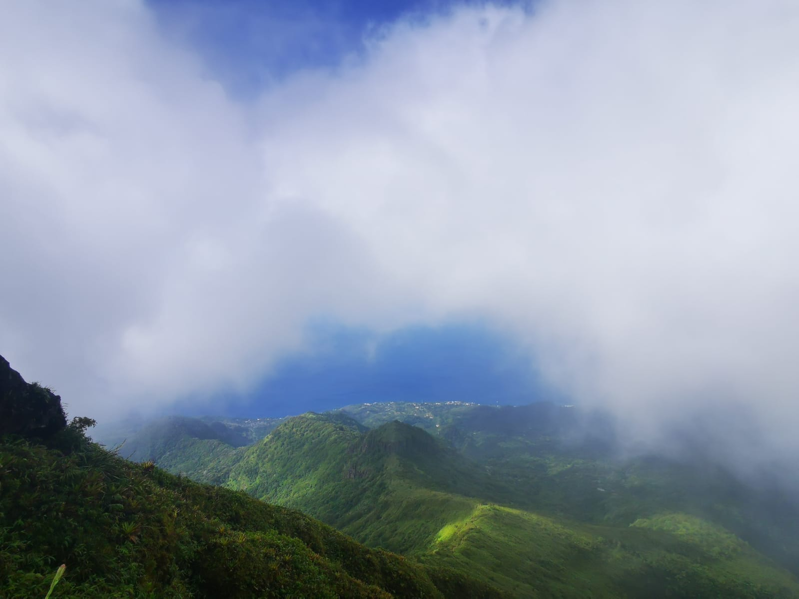

Bonjour je m'appelle Loïse Coatanéa j'ai 21 ans, je vis sur Brest.
👩🏼🎓 Diplomée d'un DUT GEA, j'ai intégré le bachelor spécalisation marketing à Audencia Business School.
Je suis en alternance chez Arkéa en tant que chargée de projet Marketing RH.
Au sein de mon entreprise, je suis en charge de différentes missions :
En ce moment, je travaille sur la réalisation d'un Google Site pour la communication interne.
Je réalise aussi un challenge dans le service RH, ce challenge dure trois mois, je dois donc toutes les semaines poster et tenir la communauté en haleine.
Je suis passionnée aussi de mode, je suis très régulièrement toutes les tendances !
Plus tard, j'aimerais travailler soit dans le milieu de la mode soit dans le secteur de la beauté!
J'aime énormément voyager, j'ai voyagé au Canada, en Martinique, en Italie, en Espagne, au Pays Bas et enfin aux Emirats Arabes Unis. Mon voyage de rêve serait d'aller en Inde!


Je pratique deux sports régulièrement.
Je fais du fitness trois fois par semaine. Puis le week end je vais profiter du cadre de vie de la Bretagne en allant surfer ou parfois faire du kitesurf.